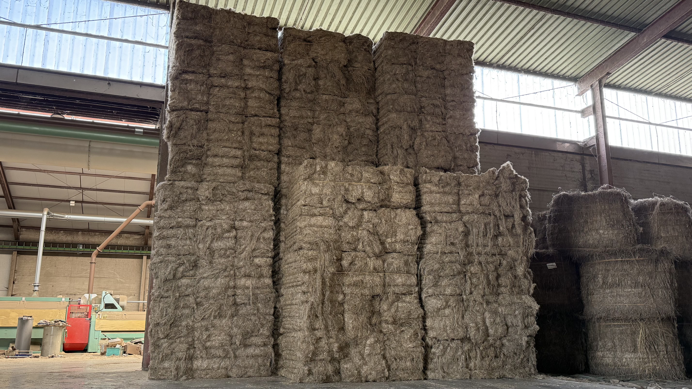
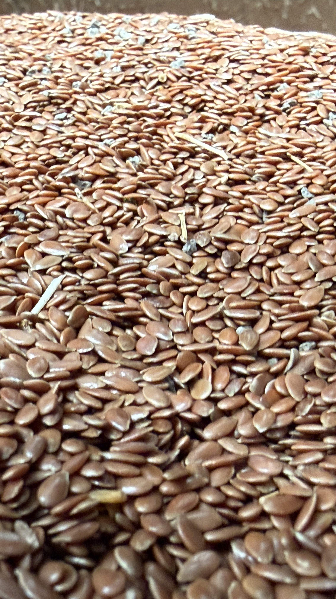
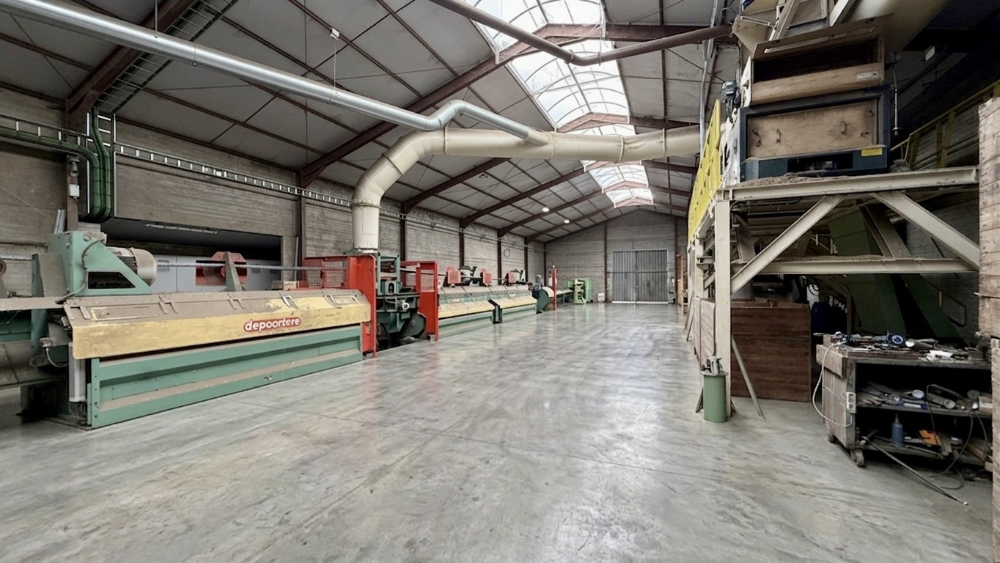

Onze producten
Kwalitatieve producten, zorgvuldig verwerkt
Agralin levert producten voor professionele klanten die belang hechten aan betrouwbaarheid, duidelijke communicatie en een constante focus op kwaliteit.
Kroten
Vlasbundels met aandacht voor kwaliteit
Onze kroten worden verwerkt met zorg en vakkennis. Voor klanten die op zoek zijn naar betrouwbaarheid en een correcte opvolging, biedt Agralin een product waarop kan worden gebouwd.
Wij kiezen niet voor ingewikkelde productniveaus, maar voor een consistente standaard en een eerlijke beoordeling van kwaliteit.


Lijnzaad
Lijnzaad voor professionele toepassingen
Agralin levert lijnzaad met de nadruk op degelijke kwaliteit en correcte service. Dankzij onze ervaring en persoonlijke aanpak kunnen klanten rekenen op een helder en betrouwbaar contact.
Wij geloven dat vertrouwen niet ontstaat door grote woorden, maar door constante kwaliteit en duidelijke afspraken.
Verwerkt vlas
Professioneel verwerkt met kennis van het vak
Verwerkt vlas van Agralin staat voor een doordachte aanpak, ervaring sinds 1995 en een sterke focus op service. Wij begeleiden onze klanten met eerlijk advies en een product dat zorgvuldig wordt opgevolgd.
Voor B2B-klanten, landbouwers en agrarische bedrijven is Agralin een toegankelijke en betrouwbare partner in de sector.

Snel contact
Wenst u meer informatie over onze producten?
Bel ons rechtstreeks. Zo kunnen wij u snel en persoonlijk verder helpen met de juiste informatie.